Next: Automatic Adaptive Channel Elimination Up: Output Signal Generation Previous: Output Signal Generation Contents
In the typical formulation of the filter&sum processing, the additive noise components on each of the channels are expected to be random processes with very similar power density distributions. This allows the noise on each channel to be statistically cancelled and the relevant signal enhanced when the delay-adjusted channels are summed. In standard beamforming systems, this noise cancellation is achieved through the use of identical microphones placed only a few inches apart one from each other.
In the meetings room it is considered that all of the distant microphones form a microphone array. However, by having different types of microphones there is a change in the characteristics of the signal being recorded and therefore a change in the power density distributions of the resulting additive noises. Also when two microphones are far from each other, the speech they record will be affected by noise of a different nature, due to the room's impulse response, and will have different amplitude depending on the position of the speaker talking.
This issue is addressed by weighting each channel in the filter&sum processing. The weights are adapted continuously during the meeting. This is inspired by the fact that the different channels will have different signal quality depending on their relative distance to the person speaking, which probably changes constantly during a recording.
The weight for channel  at segment 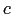 (
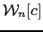)
is computed in the following way:
at segment 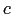 (
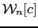)
is computed in the following way:
| 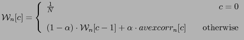 | (5.17) |
where 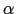 is the adaptation ratio, which was
empirically set to
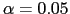, c is the segment being
processed, and
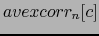 is the average of the
cross-correlation between channel  and all other channels being
all delayed using the selected
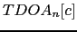 value for that
channel:
and all other channels being
all delayed using the selected
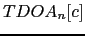 value for that
channel:
| 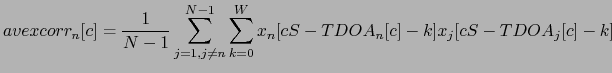 | (5.18) |
where S and W are respectively the scroll/segment size and window size of the filter&sum processing
user 2008-12-08